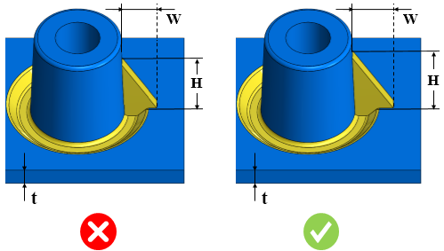

本ルールは、設定された値に基づいて、リセス付きボスに対するリブパラメータをチェックします。
ボスの根元部に厚肉部が存在する場合、ヒケを防ぐために適切なリセスを設ける必要があります。ただし、ボスを強化するために、適切なリブを追加する必要があります。
リセスを有するボスに十分な剛性を持たせるために、
リブ高さと公称肉厚の比率は、4.0 以上とする必要があります。
リブ幅と公称肉厚の比率は、2.0 以上とする必要があります。

ここでは、
H = リブ高さ
t = 公称肉厚
W = リブ幅